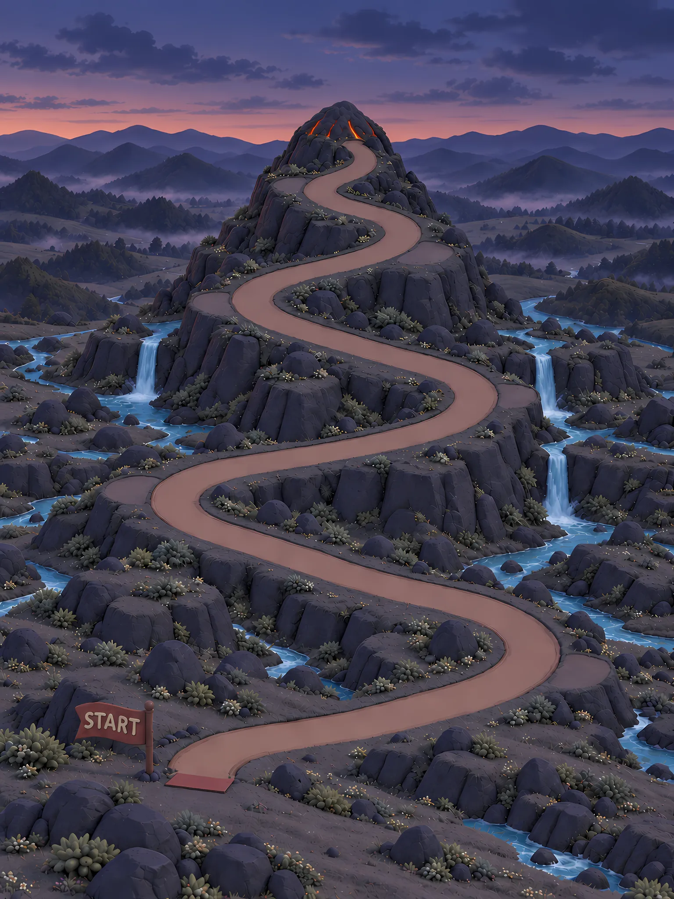

Widget’lar — küçük ve orta
Küçükler aynı kaldı. Orta boy için iki farklı fikir: dağ panoraması ve kişisel ipucu.
DAILY TEST
Step 2 is waiting
5 questions · 2 min
Done today
Step 2 of 30
Next test in 10 h

Step 2 is one test awayEmber Peak · November · 1/30
Test waiting
See you tomorrow, AdaNext test in 10 h · 1/30
Done todayTIP FOR YOU · ARTICLESUse the with superlatives.the best, the tallest, the most usefulFrom your weak spots · new tip daily
DAILY TEST Start
Start
Kurallar• Seri (streak) yok — 1.5.0 kararınla uyumlu.• Widget’ta animasyon yok (iOS izin vermez).• Gece yarısı, test bitince ve pratikten sonra güncellenir.• İpucu cümleleri uygulamadaki konu ipucu verisinden gelir; ağ çağrısı yok.